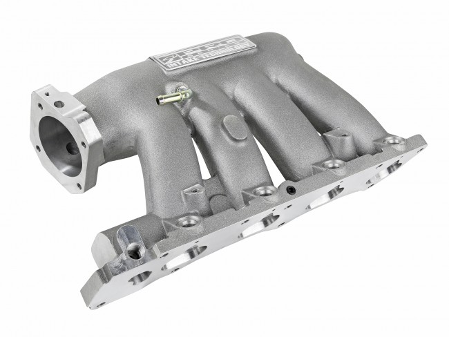

Internal Combustion Engines
Internal combustin engines convert energy of specific gasses into mechanical energy by burning them in the process. Below you can see a tuned engine of GM/Opel with 1598 cc displacement named X16XEL (optimized low-end torque)

There are wide range of Internal Combustion Engines:
- Turbocharged
- Naturally Aspirated
- Supercharged
- Procharged
- Electrocharged
- NO2 charged
The different engine types listed above are categorized by their induction methodes. Turbocharged and Naturally aspirated engines are the most popular and widely used among the others.
Naturally Aspirated
Natually Aspirated engines apirated using atmospheric pressure of natural environment. Moving pistons drag air through an intake manifold into combustion chamber while intake stroke.
Turbocharged
Turbocharged engines aspirated using turbines attached in serial to

Submit a request below
SITE UNDER CONSTRUCTION